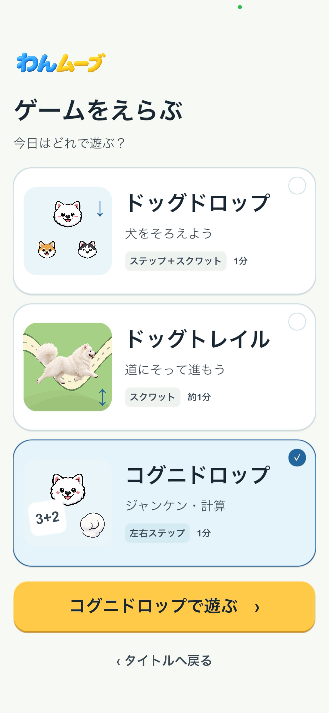
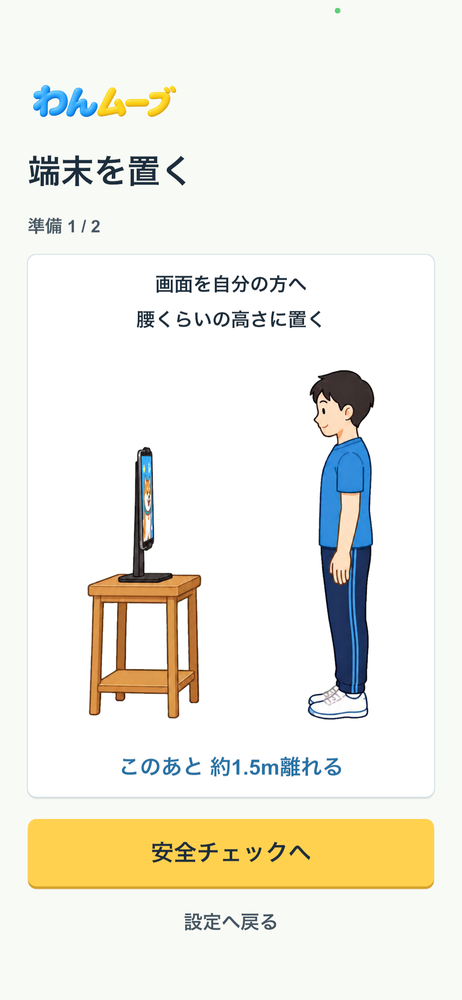
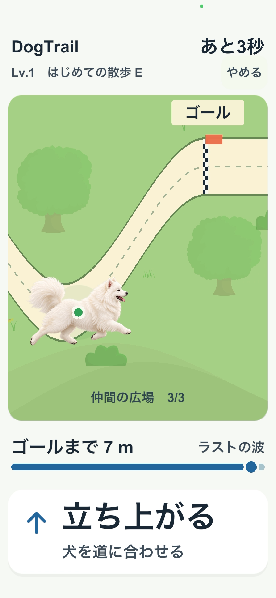
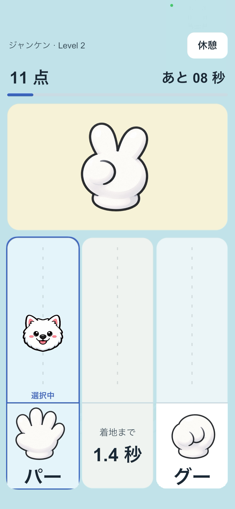
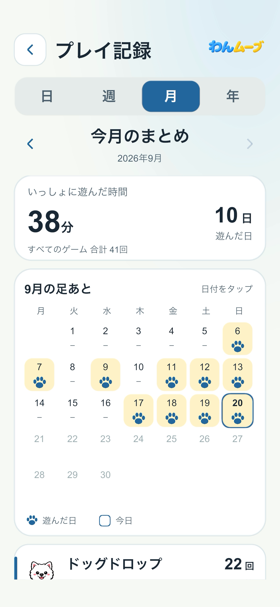

犬が一つ横へ移動
FIRST PLAY GUIDE
遊び方
v2.1.0対応 · 最終更新日：2026年9月21日
まずはゲームを選び、安全に準備。3つのゲーム、それぞれの遊び方を確認しましょう。
画面はv2.1.0向けの画面例です。端末や設定によって、表示や案内の順序が異なる場合があります。
SCENE 01
ゲームを選ぶ
タイトルの「ゲームをえらぶ」から、遊びたいゲームを選び、「このゲームで遊ぶ」を押します。ゲームごとの案内を見て設定へ進みます。
- ドッグドロップ：Level 1〜3を選ぶ（1プレイ1分、準備・練習は別）
- ドッグトレイル：Level 1〜3からコースを選ぶ（約1分）
- コグニドロップ：ジャンケンまたは計算、ルール、Level 1〜3を選ぶ（1プレイ1分）
- 初回はLevel 1から。カメラの許可と、任意の利用状況データの確認があります

SCENE 02
端末を置き、姿勢を整える
端末を腰くらいの高さの倒れにくい場所へ置き、周囲の安全を確認します。その後、約1.5m離れ、頭から足元までカメラに映る位置へ。体格や端末に合わせて距離を調整します。
- 左右と後方に動ける空間をつくる
- 画面を自分へ向ける
- 頭から足元まで映して正面に立つ


ドッグドロップ · 1分
一歩とスクワットで、犬をそろえる
犬が上から落ちてきたら、一歩でレーンを移動し、スクワットで素早く降下。同じ犬種へ合わせるとポイントです。
- 一歩ごとに犬が1レーン移動
- スクワットで犬が素早く降下
- 動いた後は中央の姿勢へ戻る


犬が素早く下へ進む
ドッグトレイル · 約1分
スクワットで、道に沿ってゴールへ。
犬は上下に動き、道が右から左へ流れます。これから来る道の高さを見て、しゃがむ深さと立ち上がるペースを合わせましょう。
最初に、自分の動く範囲を調整
「スクワット調整」で、立った姿勢と無理なくしゃがんだ姿勢を読み取ります。腕は胸の前で組み、画面の案内に合わせて動きます。
- 自然に立つ正面を向いて静止し、案内が進むまで待ちます。
- ゆっくり、浅くしゃがむ楽に保てる高さで静止します。見本と同じ深さにする必要はありません。
- 立った姿勢へ戻るゆっくり立ち上がり、準備完了の案内を待ちます。
深さを競うゲームではありません
調整した範囲の中で遊びます。点数のために無理に深くしゃがまず、痛みや不調を感じたら中止してください。

道の上下に合わせ、ゆっくり動きます。1コースに6回のしゃがむ・立つ動きがあり、間に立位の休憩が入ります。
Level 1は一定のペース、Level 2はペースにも変化、Level 3は下降と上昇の時間が異なる道へ。自分に合うレベルで遊べます。
上下に動く区間で、判定点を道の中に保てた時間の割合です。銅は60％、銀は75％、金は90％以上。立位休憩と追跡停止中は採点しません。
道・時間・採点が止まります。全身が映る位置で姿勢を整え、画面の復帰案内に従ってください。
COGNIDROP · 1分
ジャンケン・計算に、左右ステップで答える。
画面中央の問題を見て、正しい答えがある左右のレーンへ一歩。犬が着地したレーンで答えが決まります。
最初に、課題・ルール・Levelを選ぶ
- ジャンケン：「勝つ」「負ける」「あいこ」
- 計算：「たし算」「ひき算」「7ずつひく」
- Level 1〜3：犬が落ちる速さが変わります
プレイ前に選んだルールを確認し、正面の中央姿勢から始めます。初回は2画面の遊び方ガイドが表示され、左右ステップの練習は任意で選べます。
一歩で答え、足を中央へ戻す
正しい答えの側へ一歩動くと、犬が1レーン移動します。出した足は中央へ戻します。足を戻しても犬はそのレーンに残ります。スクワットや回転は答えの操作になりません。

正しい答えのレーンへ着地すると1点加算され、犬の鳴き声が再生されます。
誤ったレーンへの着地と、中央レーンのままの着地はそれぞれ1点減点されます。
得点、正解・誤答・未回答数、正解した問題の平均回答タイムを確認できます。
同じ条件の得点ベストと、全問正解したプレイの平均回答タイムを別々に表示します。
YOUR PLAY RECORDS
遊んだ時間を、振り返ろう。
タイトルの「プレイ記録」から、日・週・月・年ごとの回数とプレイ時間を確認できます。ドッグドロップ、ドッグトレイル、コグニドロップは分けて表示されます。
記録は端末内に保存されます。準備や追跡停止の時間はプレイ時間に含まれず、ドッグトレイルでは途中でやめたコースを完走回数に数えません。コグニドロップの得点・タイムのベスト3は、プレイ終了後の結果画面で確認します。

MORE DETAILS
認識と準備の詳細
初回のカメラ許可と利用状況データ
体の動きを読み取るため、初回の確認画面でカメラへのアクセスを許可します。
利用状況データの送信は任意です。「送信しない」を選んでもゲームを利用できます。
全身を認識しやすくするポイント
- 明るい場所で、強い逆光を避けます。
- 頭、両膝、足元までカメラに入れます。
- プレイヤー以外の人が認識範囲へ入らないようにします。
- 正面を向いて静止します。ドッグドロップとコグニドロップでは腕を自然に下ろし、ドッグトレイルの調整では胸の前で組みます。
カメラ映像を表示するのは、ドッグドロップ・コグニドロップの姿勢調整とドッグトレイルのスクワット調整中です。操作練習とゲーム中には表示しません。
安全に遊ぶために
- 左右と後方に、物や人へぶつからない空間を確保してください。
- 痛み、めまい、強い疲れ、体調不良があるときはプレイしないでください。
- 無理に深くしゃがんだり、大きく動いたりしないでください。
- お子さまが利用する場合は、保護者が端末の設置と周囲の安全を確認してください。
プライバシーについて
カメラ映像と身体の骨格座標は端末上でリアルタイムに処理し、保存・送信しません。
うまく認識されないときは
全身認識、3つのゲームの操作・調整、カメラ許可を症状別に確認できます。